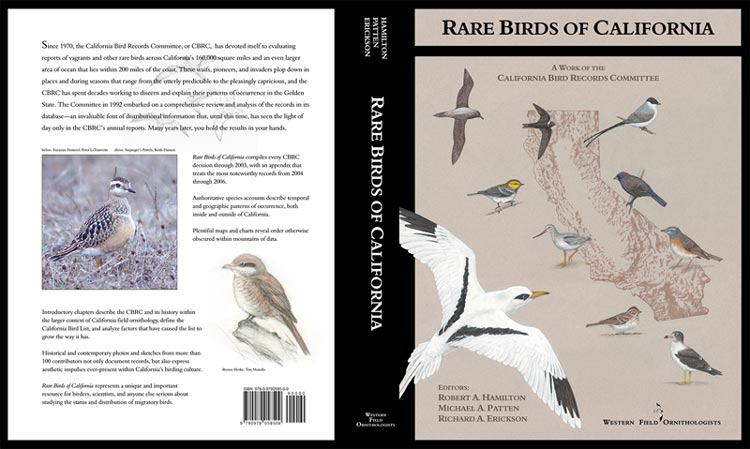

Rare Birds of California is now available in a digital format!
This electronic version links directly to the CBRC page so that one can see all the records which have occurred since the publication of Rare Birds of California by clicking on the Current Records Update tab on the left side of the screen.
This 600-page book synthesizes the work of the California Bird Records Committee from 1970 through 2003 with selected additions through 2006, putting every vagrant to California in its geographical and historical context. It is generously illustrated with color and black and white photography, including the best photographs ever taken in California of rare birds. Maps and charts depict spatial and temporal distributions, and the interpretive text adds value far beyond the lists of records.
- Online version!
- Corrigenda for online version - Updated 9 July 2015
- Corrigenda for print version - Updated 9 July 2015
- Updates - post 2003 records
- Reprints from the book

[ CBRC Home Page ] [ Purposes of CBRC ] [ CBRC Bylaws ] [ CBRC Report Form ] [ Rare Bird Photos ] [ CBRC Membership ] [ WFO Home Page ]